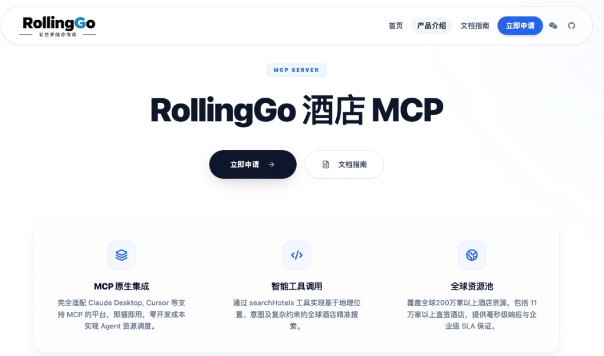
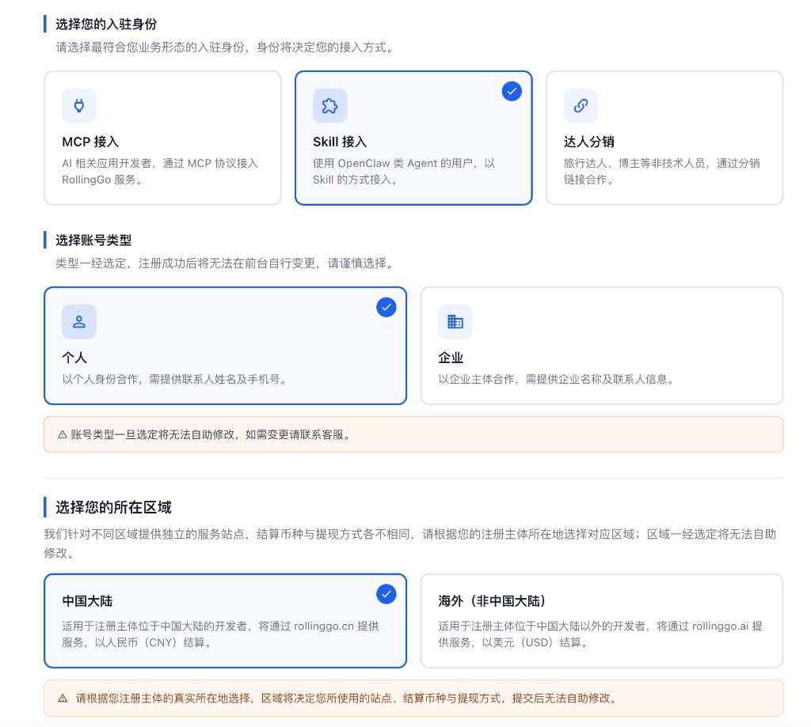
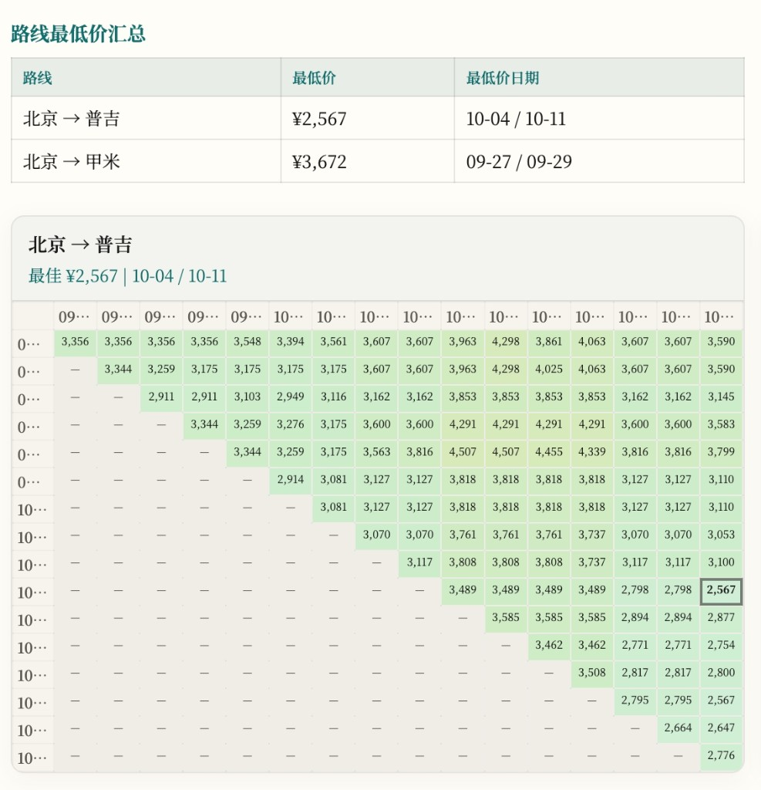
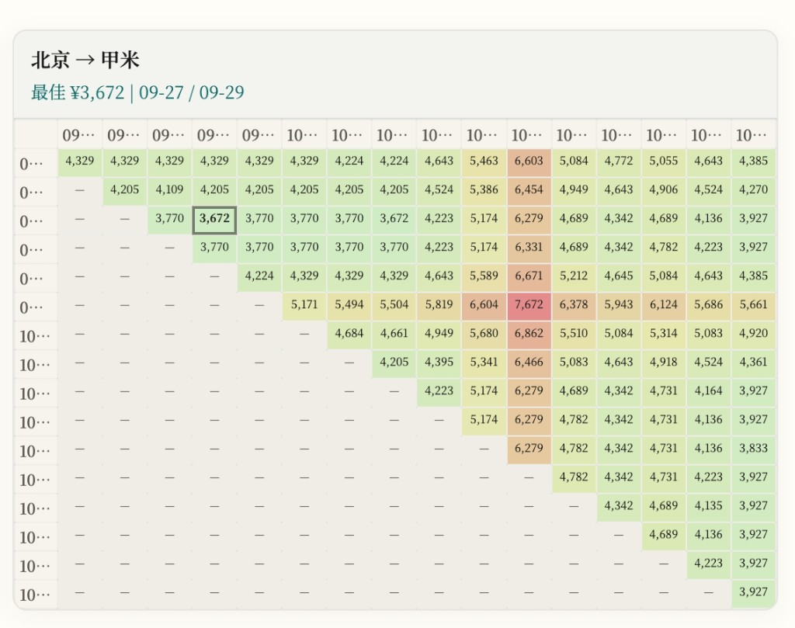

WEB · 主产品
自然语言查价
中文描述出发地、目的地与日期窗（如「国庆前后东南亚」），支持表单编辑、价格矩阵与精简/全量穷举。结果区含 Chart.js 图表、侧栏筛选与分页列表。
进入 nl-search →RollingGo · 实时查价
Flight Monitor 把 自然语言意图变成结构化搜索，用穷举引擎覆盖多城、多日期、开口程与往返联票——在线 Web 查价、价格矩阵、监控通知与 Skill 同源能力。
WEB · 主产品
中文描述出发地、目的地与日期窗（如「国庆前后东南亚」），支持表单编辑、价格矩阵与精简/全量穷举。结果区含 Chart.js 图表、侧栏筛选与分页列表。
进入 nl-search →WATCH · 监控
独立 Web 监控：往返/开口程/多段 Watch 规则，定时 RollingGo 查价，降价时飞书或 微信（PushPlus）推送。含达美开口 15 条预设。
进入监控 →CURSOR · 开发者
在 Cursor 里用自然语言查价，输出暖色 HTML 分页报告。精简模式日常扫价，全量穷举深度挖掘。纯查价 Skill，不含桌面监控。
安装与说明 →本项目查价与监控均通过 RollingGo MCP API 实时查价；同一套 Key 在 Web 查价、Flight Watch 与 Skill 中通用，只需在各自入口配置一次。
| 在线查价 | Flight Watch | Skill | |
|---|---|---|---|
| RollingGo MCP Key | 必填 · 设置页 | 必填 · 设置 Tab | 必填 · .env |
| LLM API Key | 可选 · 仅自然语言搜索 | — | — |
| 典型场景 | 探索 / 穷举 / 价格矩阵 | 长期盯价 · 降价通知 | IDE 里一句话出报告 |
第一次使用前完成以下配置；RollingGo Key 为查价必需，LLM Key 仅在自然语言搜索时可选增强解析。
01 必填
前往
rollinggo.store 注册并选择 MCP 接入，申请航班 MCP API Key（格式
mcp_...）。此 Key 在本项目各产品中通用。
03 可选
仅在自然语言搜索 Tab 使用：将「国庆前后东南亚」等句子解析为查询条件。支持 OpenAI 兼容接口；未配置时自动规则回退。表单查询与价格矩阵不受影响。
04
自然语言 / 表单 / 价格矩阵任选其一，选择精简或全量穷举模式，查看暖色报告与图表联动结果。


去程 × 返程二维热力格，支持独立日期范围；移动端可左右滑动查看。



API Key 配好后，日常查价只需以下三步。
01
自然语言或表单：多出发地、多国目的地、停留天数、开口程/往返。
02
精简模式快速扫热门城市；全量穷举覆盖配置内全部组合。
03
暖色报告：图表联动、筛选侧栏、航班号/日期/价格明细。
尚未配置 Key？先在 API 设置 填入 RollingGo MCP Key；也可在 rollinggo.store 申请。
Flight Watch 同样使用 RollingGo MCP Key（在监控页设置 Tab 配置，无需 LLM）。支持达美开口预设一键导入、筛选排序监控列表，降价时飞书或微信 PushPlus 推送。
RollingGo MCP API Key 在本项目 Web 查价、Flight Watch 与 Skill 中通用（Web 在各自设置页配置，Skill 写入
.env）。LLM Key 仅在线查价的自然语言搜索可选使用。展示价为成人含税合计参考价，无 OTA 跳转。